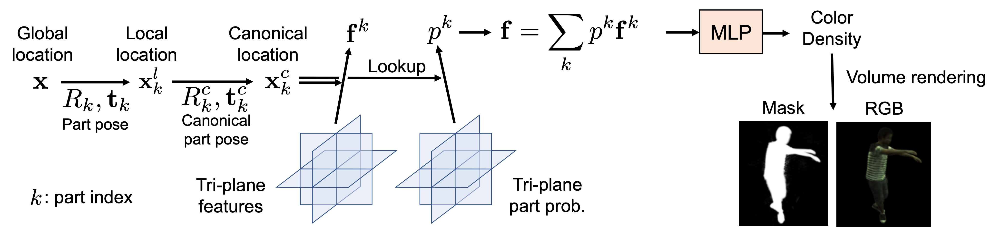
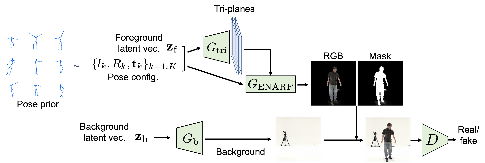

Method
To achieve efficient GAN training, we first propose a novel implicit representation for articulated objects called Efficient-NARF (ENARF), which is an extension of NARF. The model pipeline is visualized in the bellow figure. ENARF follows an efficient tri-plane based 3D representation proposed in EG3D, and extend it to articulated objects. We use tri-planes to represent hidden features and part probability of arbitrary 3D locations in the canonical space. We sample the feature and probability of each part at the input location, which are combined and converted to color and density of that location with a small MLP. Thanks to the explicit tri-plane representation, we can reduce the computational complexity significantly compared to NARF.

To train ENARF without supervision, we propose GAN-based training of it. A generator generates images of articulated objects from randomly sampled latent vectors and pose, and is trained by GAN objective. The generator consists of two networks: a foreground generator and a background generator Gb. The foreground generator network further consists of a tri-plane generator Gtri and ENARF GENARF. ENARF-based generator GENARF generates the foreground RGB image and mask from the randomly generated tri-planes from Gtri, and the background generator Gb generates background RGB image. The final output RGB image is a composite of the foreground and background images.
